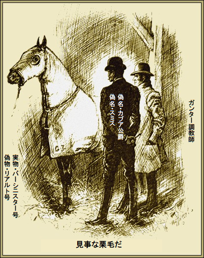
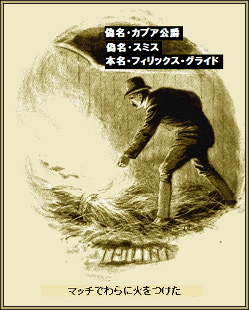

第一章
サックビル・メインはまだしらふで、相客もほぼそうだった。モーニントン・アームズ・ホテルの大理石時計が時を刻んでいる。メインは長年の酒びたりでも、領主の雰囲気を失ってない。でも領主に必要な領地はとっくに失くしていた。
相客のカブア公爵が完璧な英語で言った。
「嬉しいですな。また会えて。ナポリで最後に会ったのは何十年も前でしたな」
メインはすっかり忘れていた。自分の記憶より公爵がずっと信頼できる。メインの知ってることは公爵が述べた
相客のカブア公爵は初老のだて男、目が細く、滑稽なほどピンと口ひげを伸ばしている。眼鏡越しにうなずいて言った。
「楽しかったですな。二十年も前か。全くだ。でも昨夜ビリヤード室で君を見たとき、すぐ分かったよ。近頃どんな馬を走らせているんだい」
メインが
「すっかり落ちぶれてしまいました。全く自分がウサギ小屋に住んでるなんて信じられない。ささやかな道楽がありましてね。ダービー優勝馬を二頭も繁殖、出走させたことを自慢できる男はそういませんよ」
「かつてのゴドルフィン血統馬ですな」
とカブア公爵が探りを入れた。
メインがうなずいた。両者には一つの接点があった。公爵のことはゴータ年鑑で当時ちらっと知っていた。同年鑑の記録によれば、カブア公爵は競馬狂。
メインはほろ酔い気分で、なんでそんな偉い人物がモーニントンにいるのかといぶかった。
カブア公爵が尋ねた。
「まだ競馬を？」
「あ、いや、出来ないのですよ。出来たらいいのですが。来週オールドマーケットで行われる王立クラレンドン賞の決勝戦に
「その意気だ、君、そんなに
メインがグラスを見てにっこり。うまいワインで、こころ持ちがほぐれた。同時に自信を取り戻した。
「そうですね、少し元手があれば、道が開けるのですが。千ポンドで魂を売りますよ」
「男ならその額で危険を冒すものだ」
「ええ、人殺し以外なら、何でもやりますよ」
公爵は黙って、煙草を細い指でいじった。初老の痛風
「危険を冒さず千ポンド手に入れられますぞ。金を受け取り、黙っているだけで」
「なんてうれしい。で、条件は？」
「たった一点、あなたの若駒バーシニスター号の借金ですよ。王立賞でひと儲けしましょう。あなたの馬をあした指定の
「一ヶ月以内では無理ですよ」
公爵がニヤリ。小さな両目に奇妙な輝きがあった。
「もちろん手違いが色々あるでしょう。どっちみち、バーシニスター号の勝敗は関係ない。想定内の些細なこと。問題はですな、金を払えば馬が手に入りますか」
「その質問ですが、もちろんオーケイです」
「よかった。いいですか、極秘ですぞ。あなた名義で出走させますから、馬をオールドマーケットにあるガンター
メインは無造作に承知した。悪意をちっとも感じさせなかった。当時の常識では、競馬界の公爵に元々道徳が無いのは清掃員以上だった。そこで応じた。
「金さえもらえれば同じことです。ところで、王立クラレンドン賞の次に
「私の繁殖馬のコンフェティ号を登録したよ。残念だが勝てない。賭け率は四十対一の不利だ。私が英国にいることは数人の友人しか知らない。たぶん賭け率はもっと悪くなるだろう。すぐ分かるよ」
メインが催促した。すると、公爵がポケットから一千ポンドの札束を取り出して、言った。
「明朝オールドマーケットに行くよ。だがカブア公爵としてじゃない。実は
しばらくのち、メインは荒れ道を我が家へ向かった。モーニントン郊外にあった。
＊
一方のカブア公爵、別名スミスはホテルの居間に
椅子にふんぞり返ってつぶやいた。
「ええと、俺の立場だが、今はカブア公爵だ。変装して、あの有名人の姿を拝借して、カブア公爵に化けて、格の違いを見せつけた。当分の間、本物はジェノバの個室に監禁してある。このことは誰も知らない。更にことを安全に運ぶために、俺は勝手に出歩かない。ただし、胴元から金を引き出す最終場面は別だ。まさか誰も知るまい、銀溜杯の出走馬コンフェティ号がカブア公爵の若駒じゃないなんて。策を弄して、このヤマで十万ポンド儲けてやる。その資格がある。だって、まるまる一年、心血を注いで計画したのだから」
そう言いながら立ち上がり、やおら鍵付き箱を開け、中から大きな写真を二枚取りだした。両方とも馬の写真だ。同型の感光版で撮られている。ためつすがめつ
「そっくりだ。誕生月が同じ、斑点も同じ、みんな同じ。両馬はゴドルフィン血統だろう。まったくどっちがメイン所有のバーシニスター号か、クラレンドン重賞本命馬であるジョージ・ジュリアン卿所有のリアルト号か、わからん。メインはなんて言うだろうかなあ。俺がこの写真を撮るために六週間、張り付いていたのを知ったら……。大成功が転がり込むぞ」
第二章
オールドマーケットは皆知っているように、競馬会の本部がある。多くの調教施設が立ち並び、何百人も人手がかけられる宮殿関連
そんな施設がガンター厩舎だ。一軒のあばら家に、汚い厩舎が一列、大部分は
ガンター調教師は労働者階級の典型で、元気がよく、すばしこくて、ずる賢く、悪事も平気というやつだ。
翌晩、ささやかな夕食をモーニントンで行い、ガンター調教師がみすぼらしい居間に座り、きつい臭いの煙草をくわえ、大コップにジン酒と水を据えていた。
テーブルの反対側にはキツネ目の新郎然とした服装の色男が座り、ガンター調教師が
「順調か」
とスミスが
ガンター調教師が不審げに答えた。
「ああ、今ん所、順調でさあ。バーシニスター号は目まで黒布で覆われて来たんで、すぐ
「もちろん、みんな追い払ったな」
「ええ、奴ら朝まで戻りやせん。旦那の方はいかがで？」
「完璧だ。俺の方は心配するな。二週間以内にキミはがっぽり稼げる。俺もオーストラリアへ成功者として帰れるってわけだ。いいか、俺は表に出ない。俺の馬がこの厩舎から銀溜杯に出るだけだ。カブア公爵なんて英国競馬界では知られてないから、誰も興味を持たない。全く安全だ。その理由は実在人物がいて、いま拘束されているからだ。聞いてなかったか。金曜日に行われるクラレンドン重賞で、リアルト号に賭けないで、俺がどんな馬に賭けようが、全く問題ない。胴元に信用されている限りな。銀溜杯には、別な胴元を使って、コンフェティ号に賭けるぜ」
「万が一、コンフェティ号の本性がばれたら……」
「ばれっこない。コンフェティ号はまだ一回もお披露目してない。その上、両馬はそっくりだから、何ら心配することはない。ところで若駒をよく見たか。当然、リアルト号は知っているな？」
「何をおっしゃる。当然ですぜ」
「よろしい。じゃ、厩舎へ行って、
ガンター調教師が明かりを持ってついてきた。馬屋の一角に、見事な栗毛が毛布で目まで覆われており、奇妙なことに、ＧＪの組み文字が青く書かれている。

ほかでもない、実際、ジョージ・ジュリアン卿の商標だ。この毛布はクラレンドン重賞本命馬の馬主から盗んだものだった。目的はそのうち分かる。
栗毛を
「リアルト号そっくりだ。どこ探したってこんなのいない」
「一年近くかかった」
とスミスが言うと、
「旦那、金を分捕ったも同然だぜ。ただし、あと二時間うまくやればの話……」
「俺に任せろ。用意周到だ。ロリマー
ガンター調教師がコックリ。ロリマー大厩舎はすぐ近くにあり、そこでジョージ・ジュリアン卿の馬が調教され、クラレンドン重賞の本命馬リアルト号がつながれていた。
それからスミスがガンター調教師に長いこと、くどくど耳打ちした。ガンター調教師はいちいちうなずいた。
＊
真夜中になって、明かりが消えると、厩舎の扉をそっと開けた。真っ暗闇だったが、ガンター調教師は苦にしなかった。たとえ目隠しされても半径一キロなら目が効く。
芝が生い茂り、足元がめり込むので、
静かに草地を横切り、植木でまばらに仕切った地点に達した。ロリマー厩舎に近い。途中誰にも会わなかった。
その瞬間が来た。スミス、いや本名フィリックス・グライドが暗闇に目を凝らした。百メートル足らずの所にロリマー厩舎を確認した。
ガンター調教師が興奮してちょっと身震い。身は悪党の大男ながら、これが初めてのヤバい仕事だ。
グライドが厳しく言った。
「俺が口笛を吹くまでここにじっとしているんだぞ。口笛が聞こえたら、この馬を前に進ませろ。お前の姿を見せるんじゃないぞ。奴らに厩舎から出たリアルト号が自分で戻ったと見せかけるためだ」
ガンター調教師がモゴモゴ言うと、グライドが消えた。グライドは遂に建物にたどりつくと、ぐるりと回り、端っこに行った。立ち止まり、聞き耳を立てた。
二軒長屋からは物音一つない。ここにクラレンドン重賞本命馬がいる。外側の馬屋に入り、鍵で扉を開けた。床に大量の
しんと静まり返っている。本命馬がいる馬屋の奥からは大いびき以外、静かだ。リアルト号を世話する厩務員
「そんなに寝てられないぜ」
とグライドがニヤニヤ。
次の手順は馬屋に入って、大事な馬を
それから、厩舎の離れ扉を開け放った。石油がしみ込んだ

二分置いて、グライドは外へ出た。やおら壁を叩きはじめ、火事だあ、と大声で叫んだ。
不吉な夢から厩務員
ほかの馬屋の住人が目を覚まさないうちに、グライドは厩舎に再び侵入。馬が通るに充分な空間がまだある。まさに一触即発だったが、グライドは恐怖におののく馬を外に出し、暗闇に脱出させることに成功した。
直後、口笛をピーッと吹いた。この頃になると、助っ人が続々到着。
バケツをかき集め、大騒動の末、火を消し止めた。あれ、馬はどうなったか。こう誰かが言うが早いか、ひときわ早耳の男がひづめの音を聞きつけた。すると、暗闇から大声がした。
「馬っ子だぞ。子羊のように立ってら。こんな賢い馬は見たこたない」
厩務員
「ありがたい。そこだ、ジョー行け、向うの馬屋から飛び出たリアルト号を回収して、すぐ入れろ」
一見して馬は災難にもかかわらず平然としている。たてがみも毛布で無事なようだ。何かおかしいとか、過失以外の火事だとか、誰も夢にも思わなかった。
一方のグライドは逸品を引きつれて、待ち合わせ場所へズラかり、事態が静まるのをじっと待った。一時間後、ガンター調教師が用心深く近づいてきて、ヒソヒソ。
「旦那、ついに手に入れやしたね」
「当然だ。お前の首尾はどうだ？」
「上々ですぜ。奴ら全く俺に気づかなかった。バーシニスター号をごく自然にリアルト号だと取りやした。誰も違いがわかりゃしませんぜ。長年この商売をやってきましたが、あんな似た馬は見たこたない」
「全くだ。
しばらくのち、リアルト号はつい今までバーシニスター号がいた場所につながれた。二人は驚嘆の目で眺めた。
グライドがおどろきの声を上げた。
「英国一の若駒、三歳馬の頂点だ。だが、もうリアルト号でもなく、バーシニスター号でもない。厩務員達は見てないと言ってたから、気づかれる心配はない。さて、お前は英国一のにせ馬造りだと自慢してたな。どうだ、この白い脚毛と星印を取り除いて、絶好調のリアルト号を、半故障のコンフェティ号に実際に変えてくれ。コンフェティ号こそ銀溜杯で俺に大金をもたらしてくれる」
ガンター調教師がしわがれ声でクックッと笑った。
「せっつきなさんな。コンフェティ号は月曜の返し馬でも敵なし、楽勝でさあ。あっしの部屋で煙草でも吸って、二、三時間ゆっくりしてくだせえ。戻ってくる頃にゃ、びっくりさせまさあ」
それでもやはり、ガンター調教師がグライドを呼んで、手際を見せたのは昼近くになった。明かりを誇らしげに掲げた。
「さあ、出来栄えはどうです？ ヒッヒッヒッ」
グライドが思わずうなった。白い脚毛と星印が消え、すべすべなめらかな
ガンター調教師がほくそ笑んだ。
「クックックッ、ボロボロの調教不足のようでしょう。スピードはありそうだが、ちょっと太めだ。銀溜杯で馬場に出たら、観客はちらっと目をやるだけですよ。太めは敬遠されますから」
＊
翌日の午後、ひときわ着飾った人々がオールドマーケットに集合し、クラレンドン重賞を見に来た。王族もご臨席し、観覧席は魅力的な淑女や派手な紳士で埋まった。
後者の中に、すっかりくつろぎながら皆と離れ、パリッとした身なりの紳士がおり、その名を問われればスミスと答えるだろう。観覧席前の手すりに寄りかかり、しゃれた手袋で煙草をはさんでいる。身なりにはどんな高名な紳士も一目置くだろうが、全く注目を引かなかった。場にごく自然に溶け込んでいるようだった。
クラレンドン重賞出走馬の検量がおこなわれたとき、一番冷静な観客と言えば、おそらくスミスだろう、またの名をグライド。
背後には大勢の伊達男が居並び、中でも人目を引くのがジョージ・ジュリアン卿、リアルト号の馬主だ。ジョージ卿が観客席で返し馬を見て、ちょっと不安顔になった。お供もそう感じた。
「ジュリアン卿、あの馬ほんとに仕上がってます？」
とお供の一人が尋ねた。
「月曜ならそう言えたのだが。君にも違いが分かったか。息が速く、発汗気味だな。ついてないよ、リアルト号は夕べの火事で風邪を引いたかもな」
本命馬を知っている大衆も、一目見て不安を覚えた。人気も、賭け率で一ポイントから二ポイント落ちた。
＊
きらびやかな勝負服が一団となって発走係の眼下を駆け抜けた時、リアルト号は先頭から四番目に落ち、そのままの状態で最後の正面直線に突入した。
「リアルト号が来るぞ」
とグライドの背後の取り巻きが叫んだ。
グライドはジョージ卿の顔をちらと盗み見た。ジョージ卿は冷静に集中しているけど、唇が炎の先端のようにブルブル震えている。
「そう見えないな、リブトンが騎乗しているけど」
その瞬間、本命のリアルト号がまた後ろへ下がった。すると団子状の馬群から全くの不人気馬が仕掛けるや、リアルト号は決死の力を振り絞ったが、最終的に半馬身差で敗れた。
競馬場は大
「まあ、リアルト号が追込み馬じゃないとは言えまい。いやはや、藁を数束燃やしただけで四万ポンドの損だ」
グライドが独り言。
「まさに同額を儲けたぜ。にせのリアルト号は追込み馬だったか。実際すんでの所で持ち馬以上にいい馬をジョージ卿に差し上げかねなかった。長居は不要だ。今度は来たる月曜日に、本物のリアルト号がどんな活躍をするか見ものだ」
第三章
翌週の月曜日、午後三時二十分、みすぼらしい若駒が、ものすごい俊足で
しばしば不人気馬が重賞を制することがあるけど、全く無名の馬が二十馬身も先頭で、判定席の前を逃げ切る番狂わせは、そうあることじゃない。払戻金が暴騰するまで、誰が銀溜杯に勝ったか分からなかった。
競馬場は騒然となった。かくして、大物の予想屋は意気消沈。幸運なコンフェティ号の馬主は馬場のどこかにいるはずだが、誰も見たものがいない。
騎手の検量後、ガンター調教師とミスター・スミスが平然と語り合った。
「満足したかい」
とスミスが尋ねた。
ガンター調教師が喜びに打ち震えて言った。
「ああ、旦那は？ あっしはまるまる一万ポンド稼いだ。とんでもねえ
グライドがそっけなく言った。
「はした金だな。いいか、あと始末だぞ。気の毒だけど、秘密を守る唯一の方法だ。リアルト号・別名コンフェティ号は二度と走っちゃならない」
ガンター調教師が抜け目なくウィンクして了解。
「かわいそうだが、指示通りやりますぜ」
共犯者たちは握手して別れた。それが両者の最後の会合だったろう。グライドはガンター調教師に一片の情報も知らせる必要は無いと考えた。私設クラブで変装せず素顔で座り、静かにグローブ紙号外を読んでいた。
『銀溜杯勝利馬 死す』
『本日行われた銀溜杯を鮮やかに勝利した全くの不人気馬コンフェティ号がじつに悲劇的な最後を迎えた。ガンター調教師がブラシをかけている最中、同馬が激しく暴れ、数分後に死んだ模様。コンフェティ号の今シーズンの出走登録はほかにされてないが、それでもやはり、カブア公爵の損失には同情を禁じ得ない』
『本日行われた銀溜杯を鮮やかに勝利した全くの不人気馬コンフェティ号がじつに悲劇的な最後を迎えた。ガンター調教師がブラシをかけている最中、同馬が激しく暴れ、数分後に死んだ模様。コンフェティ号の今シーズンの出走登録はほかにされてないが、それでもやはり、カブア公爵の損失には同情を禁じ得ない』
グライドは笑いながら、椅子でくつろぎ、煙草を心ゆくまで吸い、独りごちた。
「実に今回は簡単だった。世間では競馬のイカサマに新手などあり得ないとか。だが俺にかかればその反対どころか、絶対にばれない方法を考え付く。まずリアルト号そっくりの馬を見つけ、こっそり入れ替えた。クラレンドン重賞の負けも織り込み済み。大金をリアルト号にかけた、本物のね。そのあと、本物のリアルト号を見事に偽装してコンフェティ号として走らせた。これで大もうけだ。公爵は安全なところに隔離してあるので、英字新聞など見られそうにないし、馬の
了